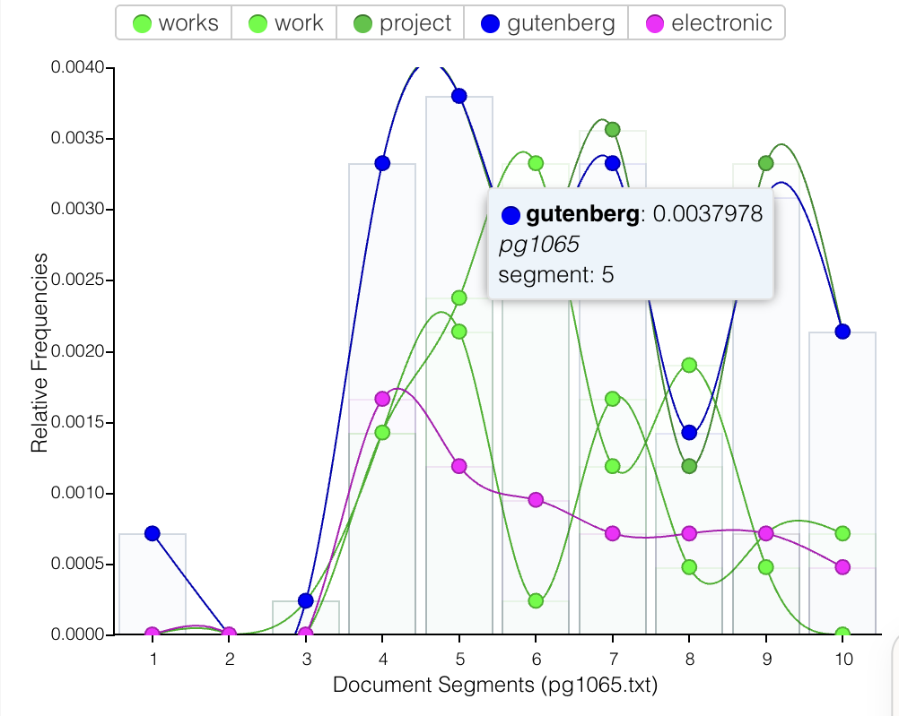
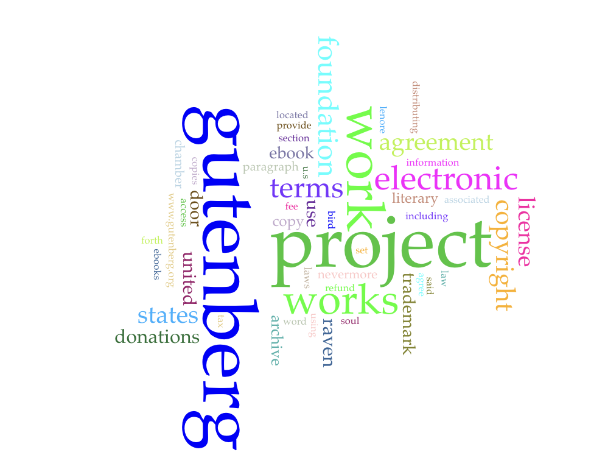

Make 5 — Reading The Raven with machines


Text alternative for the charts
The trend chart compares five publishing-related terms across ten segments of pg1065.txt. Gutenberg peaks near segment 4 at about 0.004 relative frequency; the highlighted point at segment 5 reads 0.0037978. Most terms are near zero in the first three segments. The cloud emphasizes Gutenberg and project more than poem-specific terms. These screenshots appear to include publishing or licensing text; this affects what the visualizations emphasize. The original numerical dataset was not supplied.
ChatGPT response from the assignment
Poe presents grief as something that traps a person when they cannot accept loss. At the beginning, the speaker is already exhausted and mourning Lenore, admitting that he has been reading in an attempt to find relief from his “sorrow” over her death. The Raven eventually becomes less important as an actual bird and more important as a symbol of the speaker’s inability to escape his grief.
The most important device is the repetition of “Nevermore.” At first, the Raven's answer seems almost meaningless, and the speaker even recognizes that it may simply be the only word the bird knows. However, instead of accepting that explanation, he begins asking the Raven increasingly painful questions. He asks whether he will ever find relief from his memories of Lenore and whether he will see her again in heaven. Each time, the Raven responds, “Nevermore.” This shows that the speaker is almost choosing to torture himself. He already knows what the Raven will say, but he keeps asking questions whose answers will hurt him.
Poe also uses symbolism throughout the poem. The Raven is black, associated with darkness and death, while Lenore is repeatedly described in almost heavenly terms. The bird sits on a bust of Pallas, the Greek goddess of wisdom, which creates an interesting contrast between reason and irrational grief. The speaker wants logical answers about death and the afterlife, but his emotions overpower his reason.
The poem's sound and repetition also reinforce the speaker's obsession. Words and phrases repeat constantly, especially the tapping at the door and the recurring “nothing more” and “Nevermore.” This creates a circular feeling, almost as if the speaker cannot move forward. His thoughts keep returning to Lenore just as the poem keeps returning to the same sounds and phrases.
By the final stanza, Poe makes it clear that the speaker has become completely consumed by his grief. The Raven remains above the door, its shadow falling across the floor, while the speaker says that his soul will never escape that shadow. The ending suggests that the real prison is not the Raven itself but the speaker's own inability to let go of Lenore.
Possible thesis: In “The Raven,” Edgar Allan Poe uses repetition, symbolism, and the speaker's gradual loss of emotional control to show how unresolved grief can turn into obsession, trapping a person in a cycle of suffering.
Student reflection
After using both tools, I’ve concluded that both of them analyze the short story in different ways. The Voyant tools mostly focused on patterns in the writing. It picked up on repeated words and trends. It picked up on how the story used the word “Nevermore” quite often. It helps pick up on patterns that I might not notice while reading the whole passage myself, but it doesn't go very in-depth in the reading. GPT didn’t really emphasize the patterns, but tried to explain what the patterns meant. It gives more of a summary and analysis, such as connecting themes in the writing.
When machines read literature for us, we gain the ability to pick up on key points and see the main idea of the literature quickly. However, I think we lose many details when having machines help us. The machines cannot pinpoint when a part of a story is emotional or relatable. AI may be able to interpret emotion, but can not actually experience the sadness of the story. You also don’t get as much of a feel for the tone of the reading when having machines read it for us.
Attribution and AI use
Text used: The Raven by Edgar Allan Poe.
Source: The digital copy of The Raven used for this assignment.
Tools used: Voyant Tools and ChatGPT.
GPT prompt: “Give me a literary or rhetorical analysis of The Raven by Edgar Allan Poe.”